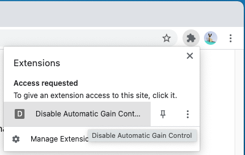
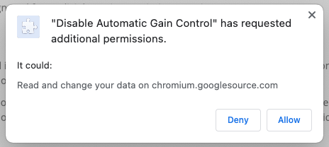
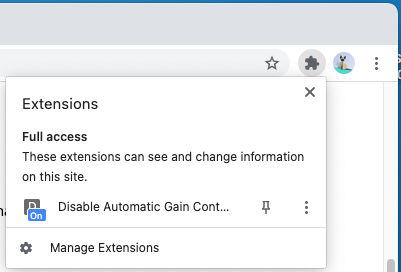

Disable Automatic Gain Control
Usage
- Visit the domain that you would like to disable automatic gain control on. For example, to disable the gain control for Google Meet, visit https://meet.google.com. (Ensure that you're logged in, so it doesn't redirect you to a different origin.)
-
Click on "Disable Automatic Gain Control" in the extensions
list.

-
It will request permission to access the site.

-
Once the permission is granted, the page will refresh and
the icon in the extensions list will show a badge which
reflects that the extension is activated.

- To disable the extension on the domain again, simply select the "Disable Automatic Gain Control" extension from the list again. It will refresh the page and the "On" badge will disappear.